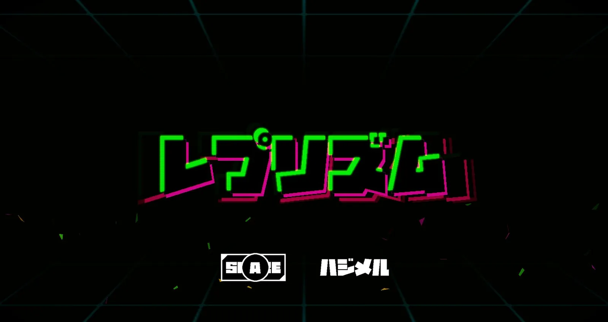
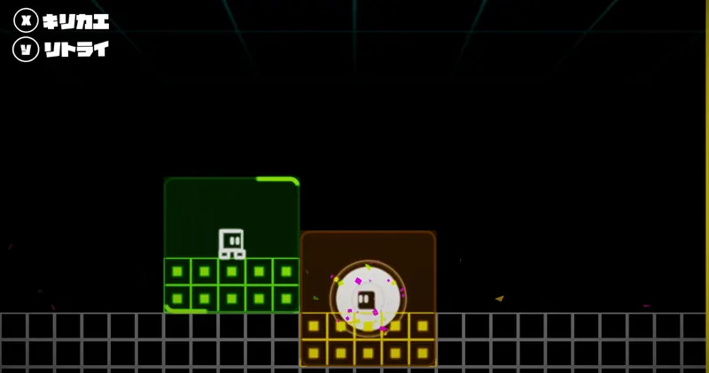
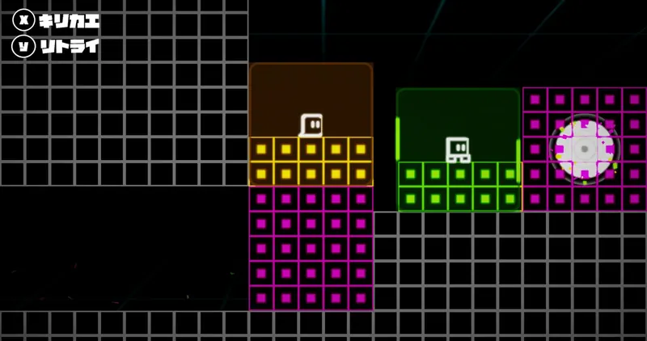

自己紹介

- 趣味
- LIVE・音楽を聴く・ゲーム・ボウリング・ダーツ・体を動かすこと
||使用可能なツール
 Visual Studio
Visual Studio GitHub
GitHub Aseprite
Aseprite Blender
Blender
||使用可能な言語
 C
C C++
C++
PORTFOLIO
KOA TANAHARA
大好きな故郷、沖縄の海を
自作ゲームエンジンで。
水面をクリックすると、波紋が広がります
SECTION 01
自己紹介
SECTION 02
作品概要

作品概要 / 目標
目標：沖縄の海を自作ゲームエンジンで実装
大好きな故郷、沖縄の海をゲームエンジンで再現したかったから
目指した海（沖縄の写真）


自作エンジンで再現した海


作品概要 / 基本レンダリング
海を再現するため、前提となる物理ベースレンダリングを実装しました。
Unreal Engine が公開している文献などを参考にしながら実装しました。
水の実装にてレイトレーシングで “G-Buffer” を使用するので Deferred Rendering を実装しました。
ですが水は半透明のため Forward Rendering も実装し、Deferred Rendering + Forward Rendering のハイブリッド構成にしました。

作品概要 / Water Rendering

近景向けの Gerstner Wave と、大規模海面向けに GPU 上で自作した FFT Ocean を統合したハイブリッド構成を実装
詳しくは → 説明資料 p7〜p8なぜ FFT を選んだのか／既存の枠組みに自分で足した 3 点
作品概要 / Water Rendering


浅瀬のエメラルドから深瀬の青への変化を、色指定ではなく 水の吸収係数・散乱係数 から計算で導出
詳しくは → 説明資料 p9色を手で塗るのをやめて、水の吸収・散乱から計算するまでの話
作品概要 / Water Rendering

詳しくは → 説明資料 p10〜p11・補足A（p22）水面際が破綻した原因と、レイで情報を足した話
作品概要 / Sky Atmosphere


空の色は、レイリー／ミー散乱とオゾン吸収の積分 から生成。時刻を動かすだけで昼→夕→夜が変わります
空・雲・水面・環境光を、同じ大気散乱から供給時間帯ごとのアセットや個別調整は要りません
作品概要 / Volumetric Cloud

雲も空と同じ光源で積分し、水面とモデルに映り込むノイズもアセット無しで、全部エンジン内で生成
SECTION 03
チーム作品紹介 / 概要
// 1年生編
// 2年生編
チーム作品紹介 / 1年生編


回転するサルを操作し、タイミング良くポールをジャンプしながらゴールを目指すゲームです。
タイトルシーンがメインだったので、ゲームにおいて一番最初に見られる画面に動きを沢山付けて、目を引くような演出になるように制作しました。
チーム作品紹介 / 1年生編


制限時間内に、時間を止めて敵をクリックし沢山連鎖させてスコアを稼ぐゲームです。
タイトルシーンとゲームシーンのシステム部分の土台を制作しました。学内製エンジンをチームメンバーがより簡単に扱えるようにし、行列演算やゲームを支えるコア部分の設計に力を入れました。
チーム作品紹介 / 2年生編


マップに配置されているアンカーポイントを目掛けてチェーンを伸ばし、ゴールを目指すゲームです。
タイトルシーンとステージセレクトシーン、ゲームシーンの演出の部分を担当しました。自分以外のエンジンを使った初めての制作だったので、試行錯誤しながらシェーダーを使った演出に力を入れました。
セレクトシーンの背景やシーン遷移など、どんな演出にしたら世界観とマッチするのか？を意識して実装しました。
チーム作品紹介 / 2年生編


プレイヤーは回転しながら敵にゲキトツし、雷があるステージ 4 隅にぶつけるアクションゲームです。UI を含むゲーム内にある全てがボクセルで構成されています。
タイトルシーンをメインとして担当しました。タイトルからユーザーに気を引いてもらえるように背景で敵とプレイヤーが追いかけっこをしている演出を入れたり、ボクセルによる稲妻の演出に特に力を入れました。
チーム作品紹介 / 2年生編



自作エンジンで行う初めての完全 2D ゲームを作成しました。タイトル・ステージセレクト・ゲームシーン・演出面などを担当しました。
2D のテクスチャにシェーダーを使って演出を鮮やかにしたり、テクスチャアニメーションでは表現が難しい演出などを、全てシェーダーを使用して画面が鮮やかになるように意識しました。